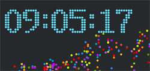
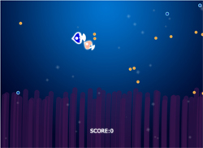

练习的canvas绚丽的倒计时效果.彩球的运动时重点.原文链接: http://www.imooc.com/learn/133" target="_blank
练习的canvas绘制一片星空,五角星和月亮的画法. 原文链接: http://www.imooc.com/learn/185

练习的canvas绘制的随机运动的小球 原文链接: http://www.imooc.com/learn/185

练习的canvas绘制的小鱼游戏 原文链接: http://whttp://www.imooc.com/learn/515

练习的canvas绘制的小熊时钟 原文链接: http://www.w3cfuns.com/notes/17507/02163454874d556f0f3f9e40f5d820bb.html